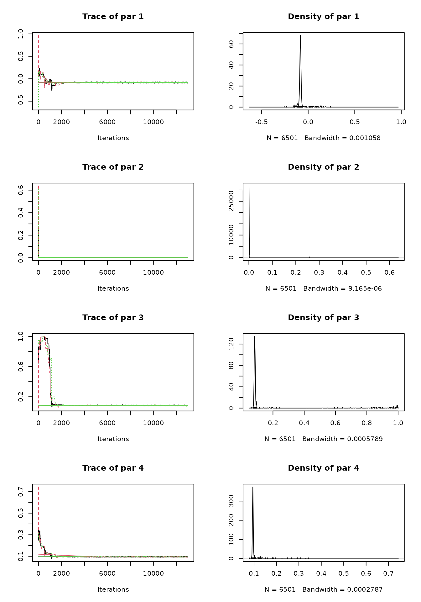
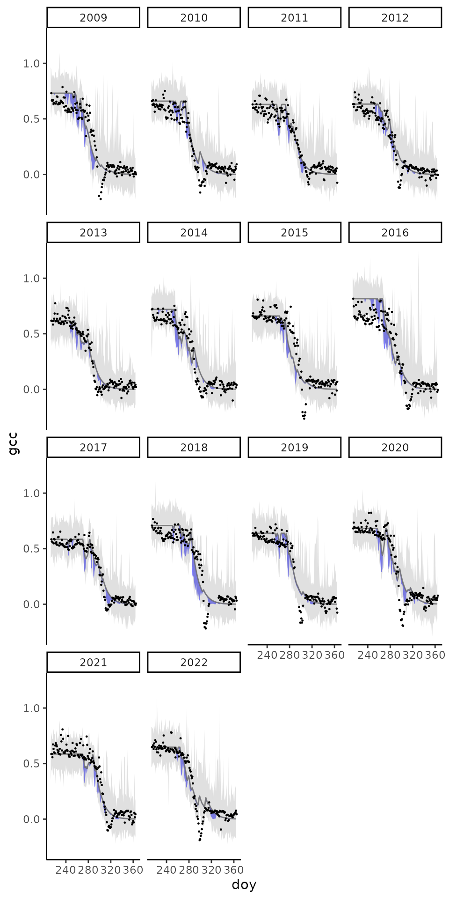

Calibration and uncertainty analysis
Koen Hufkens
Source:vignettes/calibration_uncertainty_analysis.Rmd
calibration_uncertainty_analysis.RmdData preparation and filtering
Loading the formatted data (see data-raw scripts), and
filtering only the harvard data as a demonstration.
# load libraries and functions
library(dplyr)
library(tidyr)
library(ggplot2)
library(patchwork)
library(BayesianTools)
source(here::here("R/likelihood.R"))
source(here::here("R/chlorophyll_cycling.R"))
source(here::here("R/df_to_list.R"))
source(here::here("R/normalize_ts.R"))
set.seed(0)
# load raw (bulk data)
# and filter for a single site
# and a DOY range
# further subsets can be generated
# using custom filters
# this is beyond the scope of this example
raw_data <- readRDS(here::here("data/phenocam_data.rds")) |>
filter(
site == "harvard"
)|>
group_by(year) |>
mutate(
gcc = normalize_ts(gcc, c(0.1,1)),
) |>
filter(
doy > 213
)
# reformat to the required list based
# model input format
df <- raw_data |>
df_to_list()Setup {BayesianTools} routines / parameters for optimization. Note that this might take a while to run.
# Bayesian optimization routine
control = list(
sampler = 'DEzs',
settings = list(
burnin = 1000,
iterations = 100000
)
)
# set parameter ranges
# b1 - b3
lower <- c(-1, 0, 0)
upper <- c(1, 1, 1)
# setup of the BT setup
setup <- BayesianTools::createBayesianSetup(
likelihood = function(random_par){
do.call("likelihood",
list(par = random_par,
data = df,
model = "chlorophyll_cycling"
))},
# include an additional parameter
# range for data uncertainty
lower = c(lower, 0),
upper = c(upper, 2)
)
# calculate the optimization
# run and return results
out <- BayesianTools::runMCMC(
bayesianSetup = setup,
sampler = control$sampler,
settings = control$settings
)Plot parameter traces
plot(out)
Gelman-Brooks-Rubin diagnostics
BayesianTools::gelmanDiagnostics(out)## Potential scale reduction factors:
##
## Point est. Upper C.I.
## par 1 1.01 1.02
## par 2 1.01 1.02
## par 3 1.00 1.00
## par 4 1.01 1.02
##
## Multivariate psrf
##
## 1.01Explore model results and uncertainty
# Sample parameter values from the posterior distribution
samples_par <- BayesianTools::getSample(
out,
thin = 1000
) |>
as.data.frame() |>
dplyr::mutate(
mcmc_id = 1:n()
) |>
tidyr::nest(
.by = mcmc_id,
.key = "pars"
)A wrapper for the model run (formatting the data).
model <- function(sample_par, data){
gcc <- chlorophyll_cycling(
par = sample_par,
data = data
) |>
as.data.frame()
# doy label
gcc$doy <- 1:nrow(gcc) + 212
# convert to long format
# inefficient but allows for nicer plotting
gcc <- gcc |>
tidyr::pivot_longer(
starts_with("harvard"),
values_to = "gcc"
) |>
mutate(
gcc_obs = gcc + rnorm(
n = n(),
mean = 0,
sd = sample_par$`par 4`
),
year = as.numeric(gsub("harvard_", "", name))
)
}Run the model across sampled parameters.
# Run the model for each set of parameters
model_runs <- samples_par |>
dplyr::mutate(
sim = purrr::map(pars, ~model(.x, data = df))
)Summarize the data by year and day-of-year.
model_runs <- model_runs |>
tidyr::unnest(sim) |>
dplyr::group_by(year, doy) |>
dplyr::summarise(
gcc_q05 = quantile(gcc, 0.05, na.rm = TRUE),
gcc = quantile(gcc, 0.5, na.rm = TRUE),
gcc_q95 = quantile(gcc, 0.95, na.rm = TRUE),
gcc_obs_q05 = quantile(gcc_obs, 0.05, na.rm = TRUE),
gcc_obs_q95 = quantile(gcc_obs, 0.95, na.rm = TRUE),
.groups = "drop"
)Plot the time series and uncertainties nicely. With grey, data uncertainty, and blue model uncertainty.
# Plot the credible intervals
plot_gcc_error <- ggplot(
data = model_runs
) +
geom_ribbon(
aes(
ymin = gcc_q05,
ymax = gcc_q95,
x = doy
),
fill = 'blue', alpha = 0.5) +
geom_ribbon(
aes(
ymin = gcc_obs_q05,
ymax = gcc_obs_q95,
x = doy
),
fill = 'grey40', alpha = 0.2) +
geom_line(
aes(
doy,
gcc
),
colour = "grey40",
alpha = 0.8
) +
geom_point(
data = raw_data,
aes(
doy,
gcc
),
size = 0.2
) +
theme_classic() +
facet_wrap(~year)
print(plot_gcc_error)